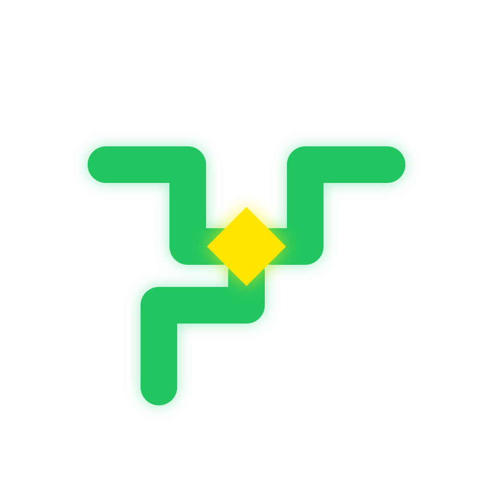
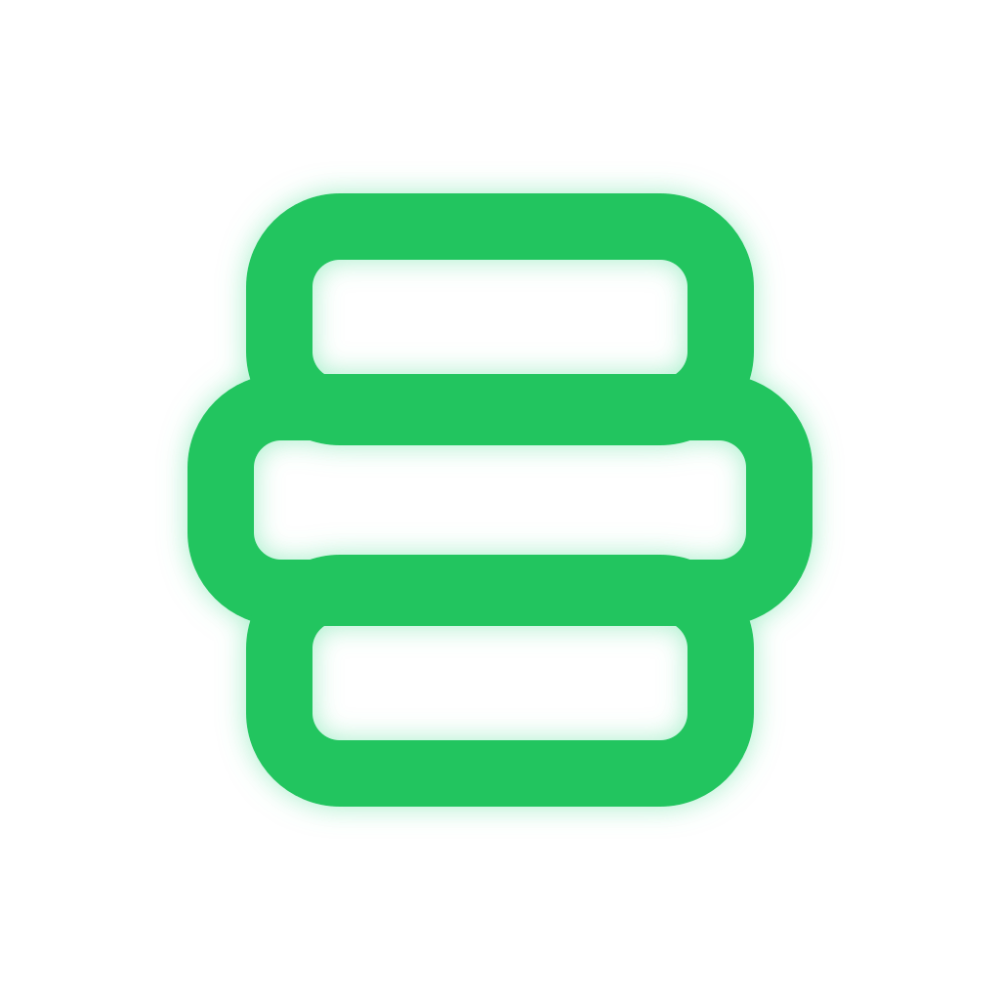
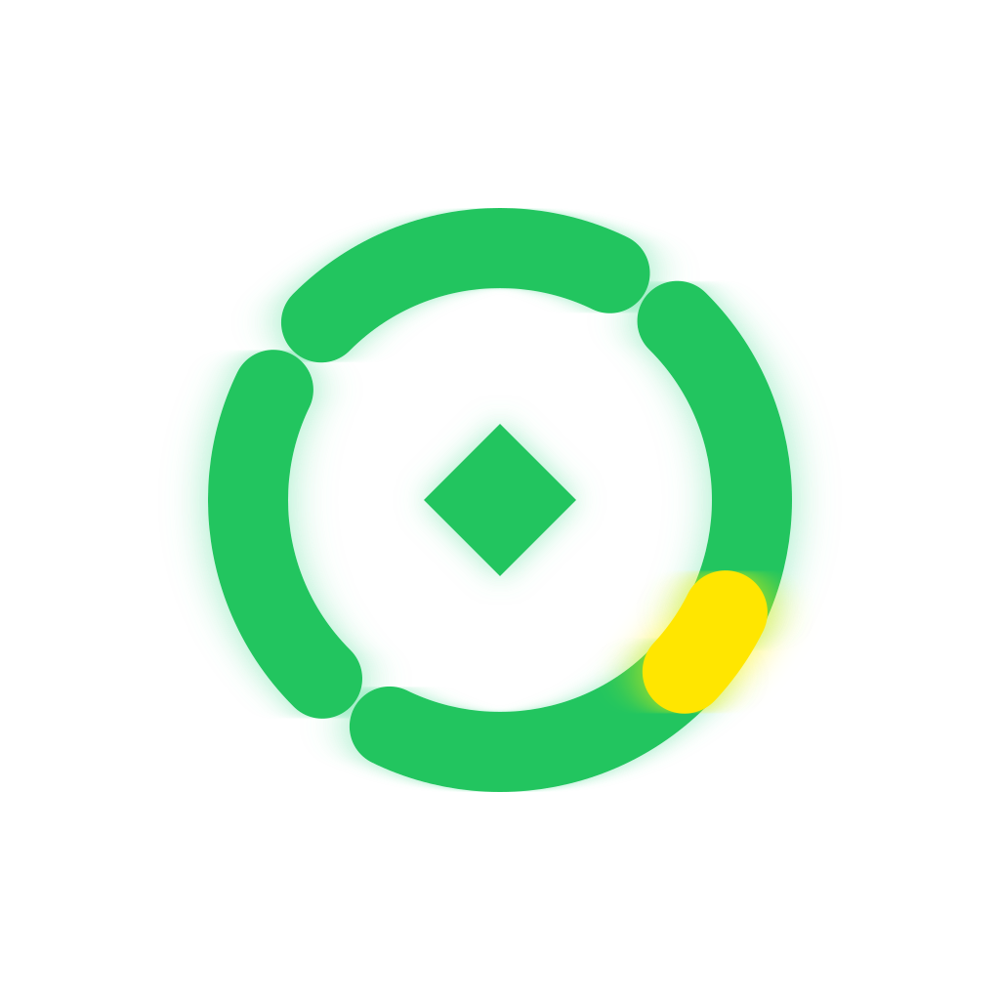

OPTION D
推荐个人中枢

64PX32PX16PX
三条绿色执行轨道汇入黄色个人核心，表达 Loom 将多种 AI 能力统一到用户可控的本地中枢。小尺寸只保留三向结构与黄色核心，辨识度最稳定。
Loom / App Icon Review / R2
这一轮不再把 Loom 只理解为“织机”，而是表达本地常驻、能力汇聚、工作流编排和个人控制。黄色代表用户与当前决策核心，绿色代表 Art、智能体、Hook、MCP 与执行通道。

三条绿色执行轨道汇入黄色个人核心，表达 Loom 将多种 AI 能力统一到用户可控的本地中枢。小尺寸只保留三向结构与黄色核心，辨识度最稳定。

三层绿色执行面代表智能体、工作流与工具，黄色控制脊柱将它们统一成一个操作工作台。更强调任务排布和执行层次，但可能被理解为服务栈。

分段绿色轨道表示可插拔能力，黄色段表示当前激活控制点，中心绿色菱形表示本地运行核心。最简洁，但需要注意避免被误解成刷新或加载状态。